Featured Projects
Arby's Performance Web App (Current Project)
Next.js (App Router) • React • TypeScript • Supabase (Auth & Postgres) • Tailwind CSS • TanStack Query
Developed and deployed a real-world performance-tracking web app used by my Arby’s team to set goals,
record metrics, and analyze weekly KPIs such as Drive-Thru Speed, Sales, Labor, and Food Variance.
- Implemented secure role-based access, persistent sessions, and a streamlined UX tailored to actual store operations.
*All images shown below are shown from a PC view. All sections have been configured to fit for mobile devices.*
View on GitHub
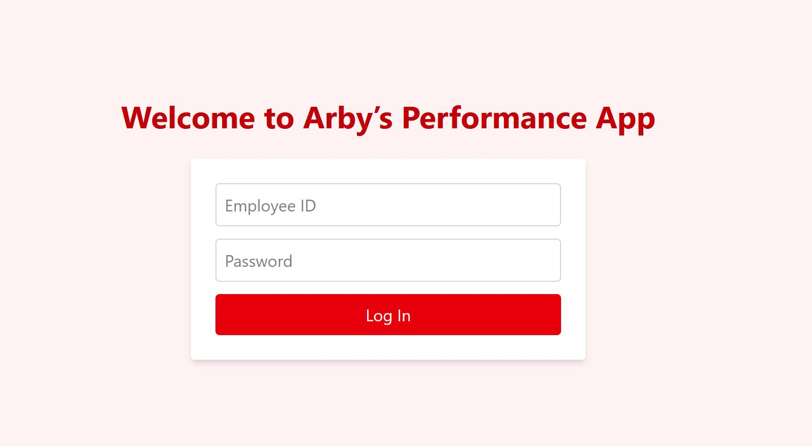
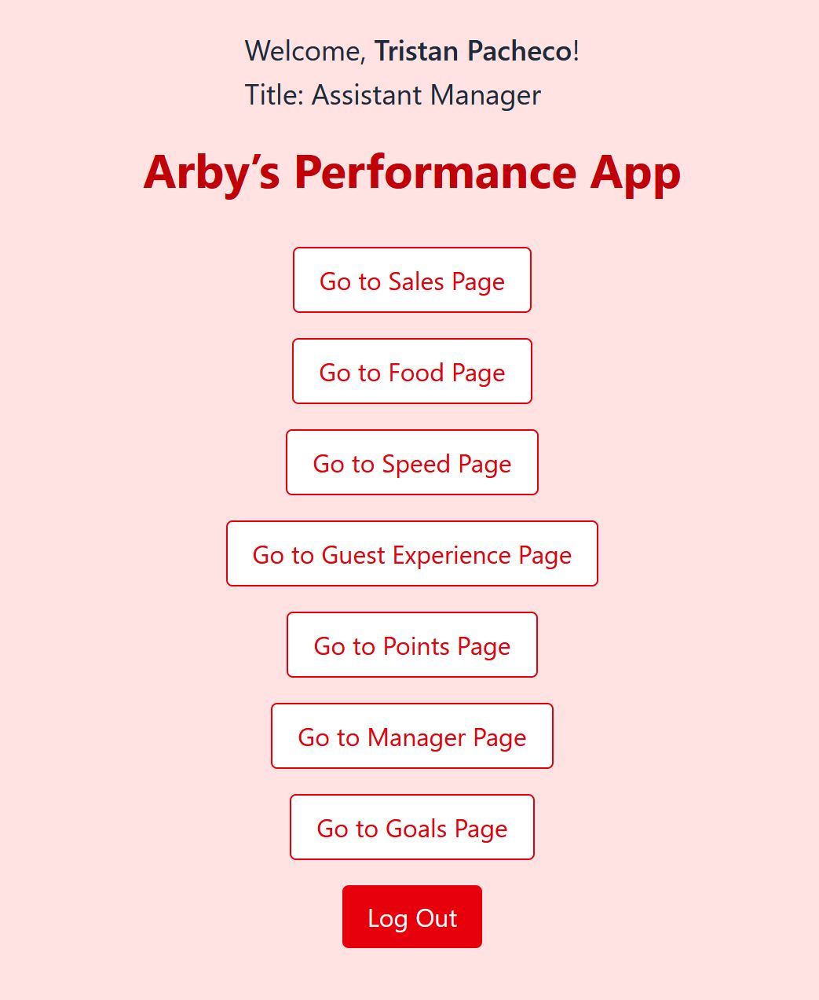
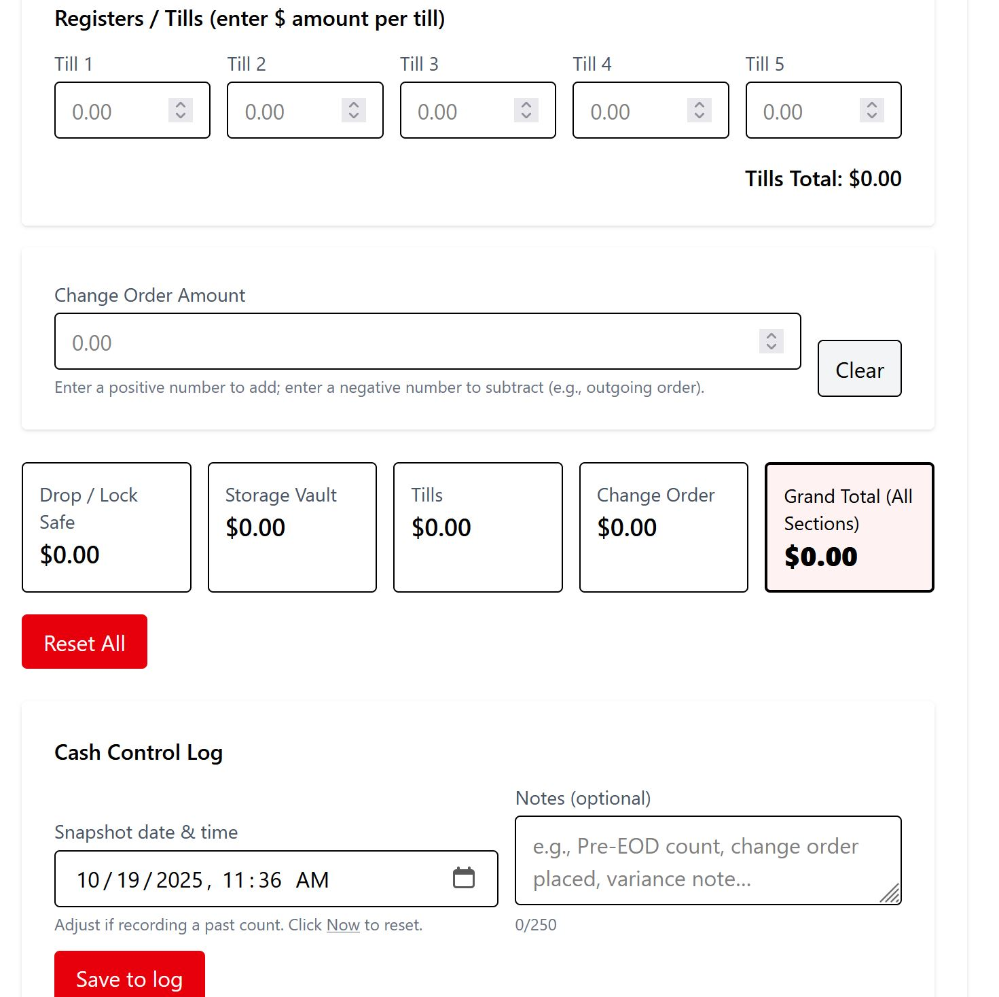
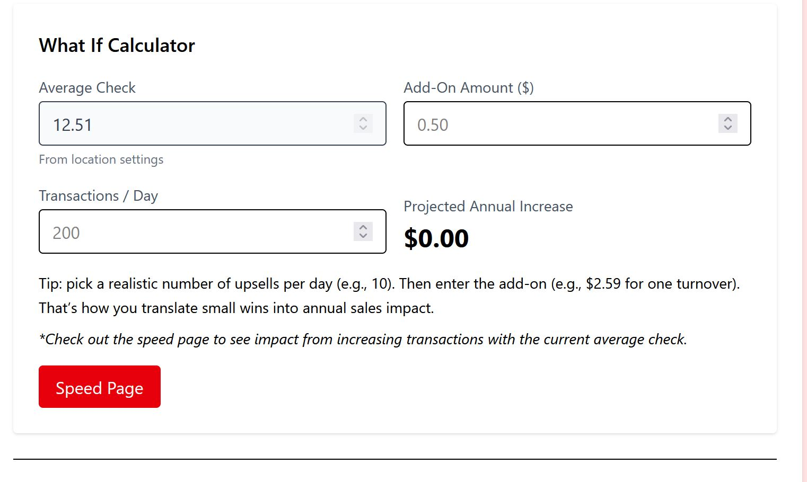
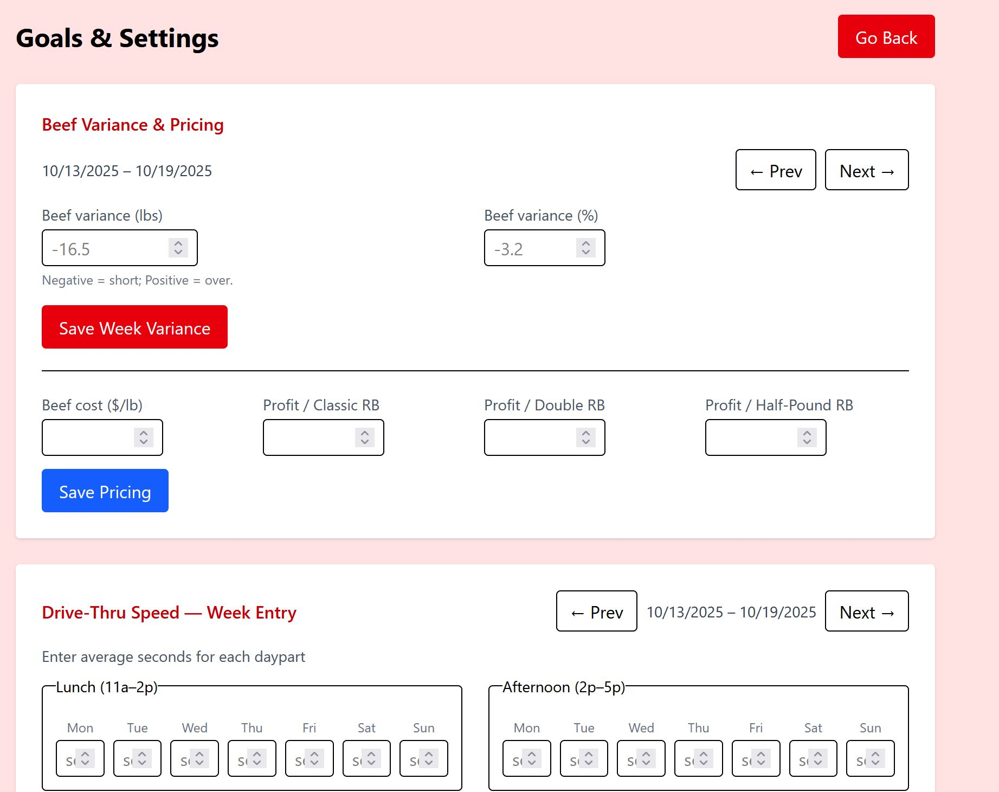
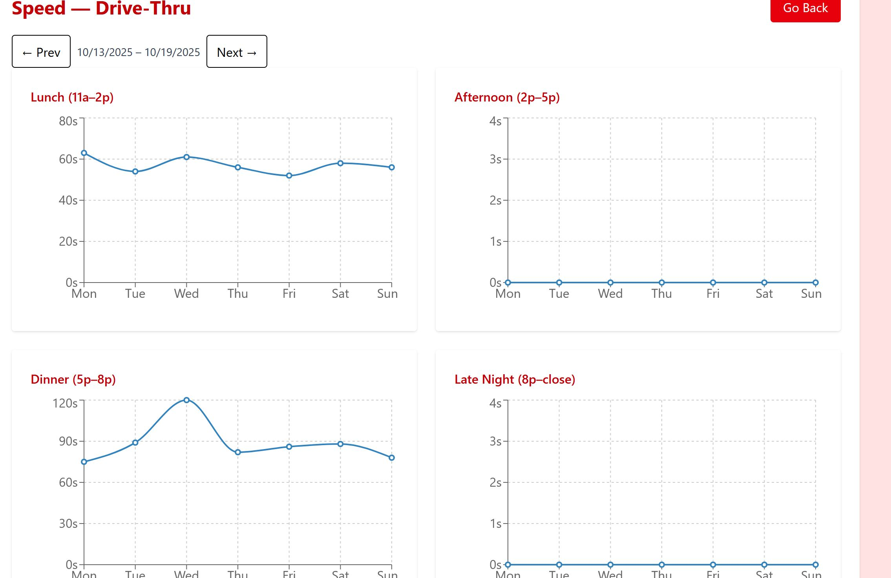
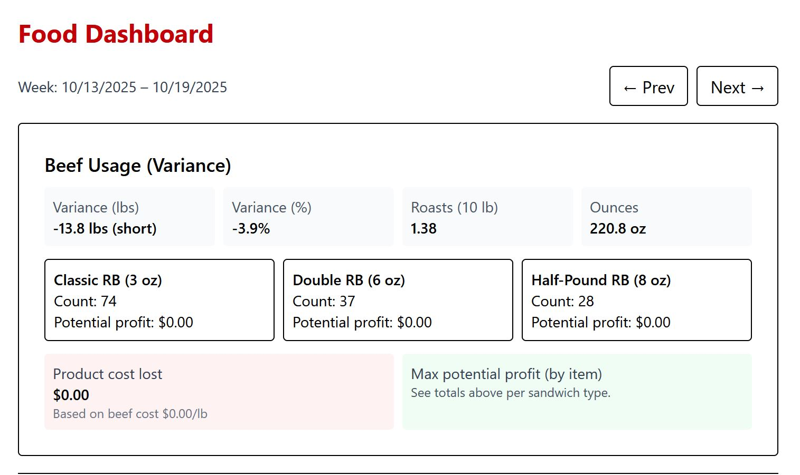
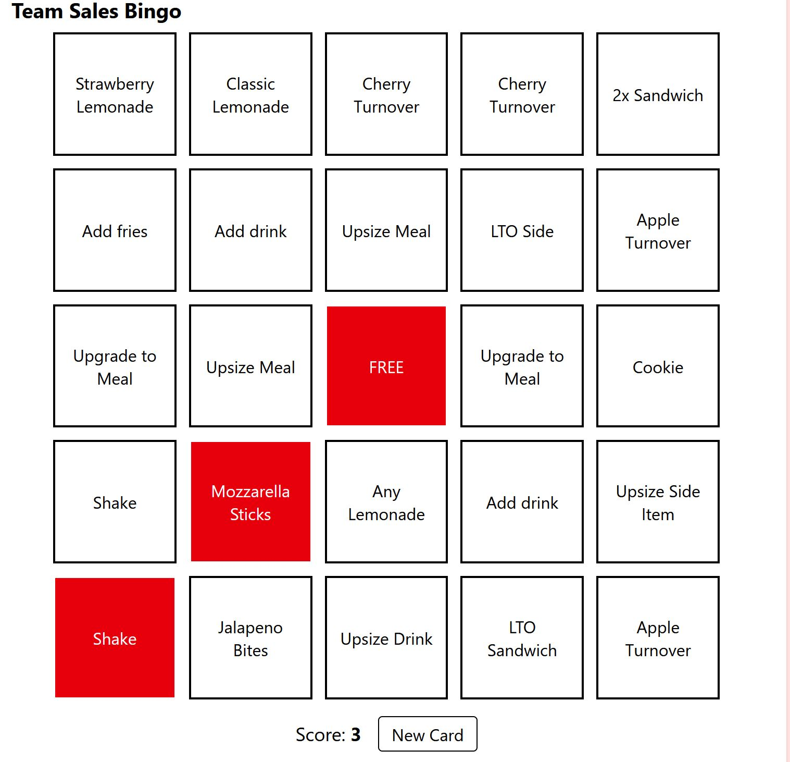
Financial Manager
• Java • Swing • File I/O • OOP •
Built a personal finance manager desktop app in Java that helps users track spending, deposits, and plan for retirement.
- Implemented a secure login system with user-specific data storage
- Designed a full GUI interface to manage bills, income, and retirement goals
- Developed a retirement estimator based on user input for age and monthly contributions
- Used Java’s file handling to save and load data per user account
- Applied object-oriented principles to organize logic and maintain scalability
Watch Demo Video on YouTube
View on GitHub
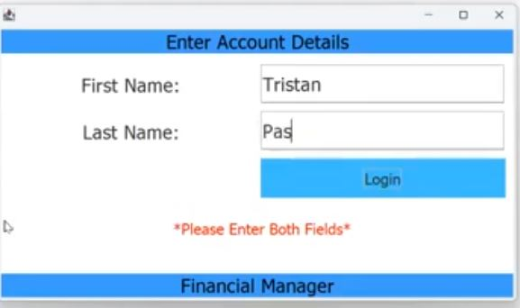
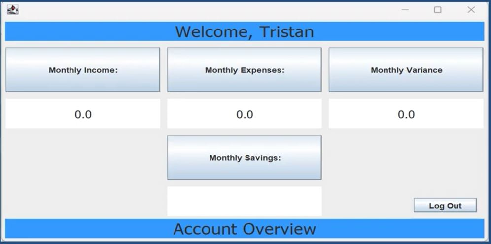
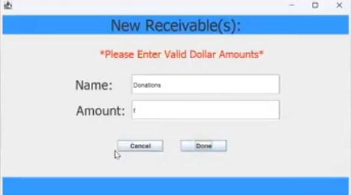
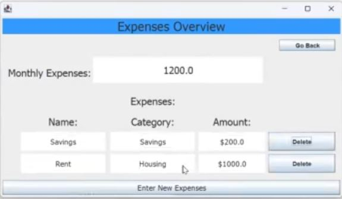
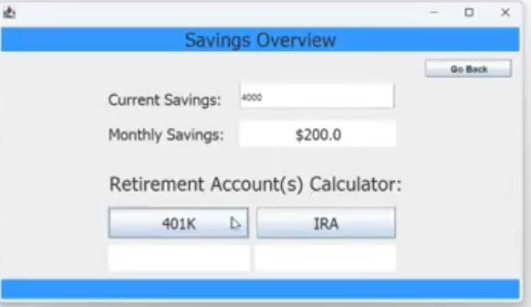
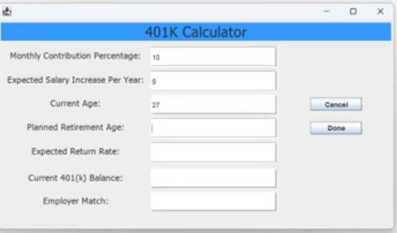
Arby's Store Manager
• Java • JavaFX • File I/O • UI/UX Design •
Developing a desktop simulation of restaurant operations inspired by real-world Arby’s management tasks.
- Built with role-based login support (Manager, Team Lead, Trainer) and personalized user preferences
- Created multiple views (Login, Dashboard, Sales Entry, Settings, etc.) with dark mode and fullscreen toggling
- Stored local user preferences and last-used login state using Java file I/O
- Features in development include printable reports, simulated sales tracking, and export options
View on GitHub
User Behavior Analytics Dashboard
• Python • Streamlit • Plotly • pandas •
Built and deployed an interactive dashboard that analyzes simulated user data for retention and A/B testing insights.
- Designed a full data workflow: simulation → analysis → visualization → deployment
- Implemented custom filters for A/B group, signup date, session count, and retention
- Generated automatic insight summaries based on performance comparisons
Deployed Live on Streamlit Cloud
View on GitHub
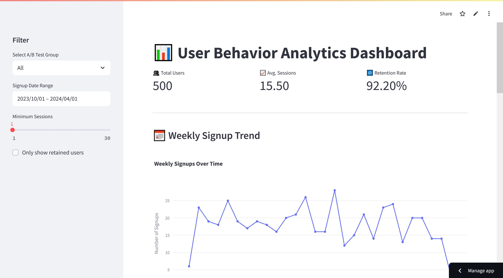
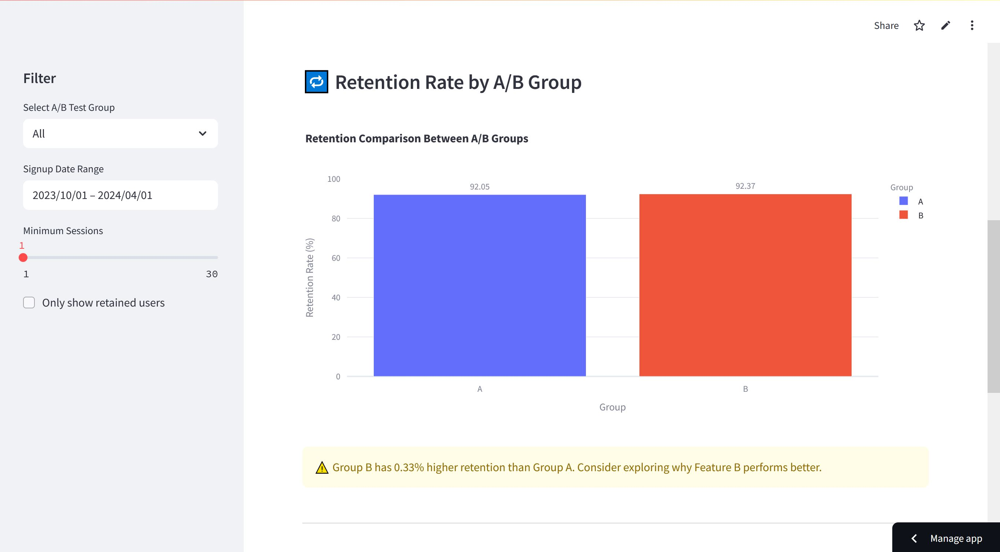
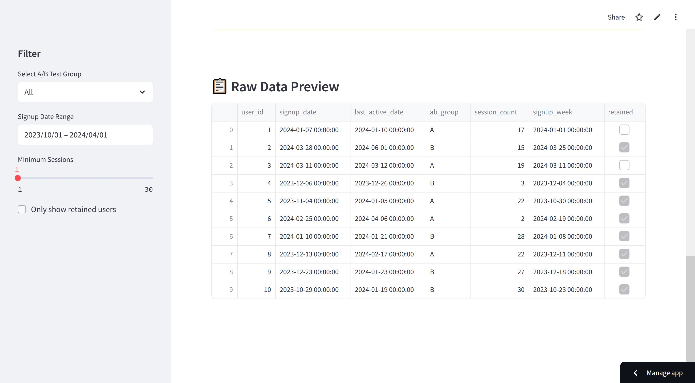